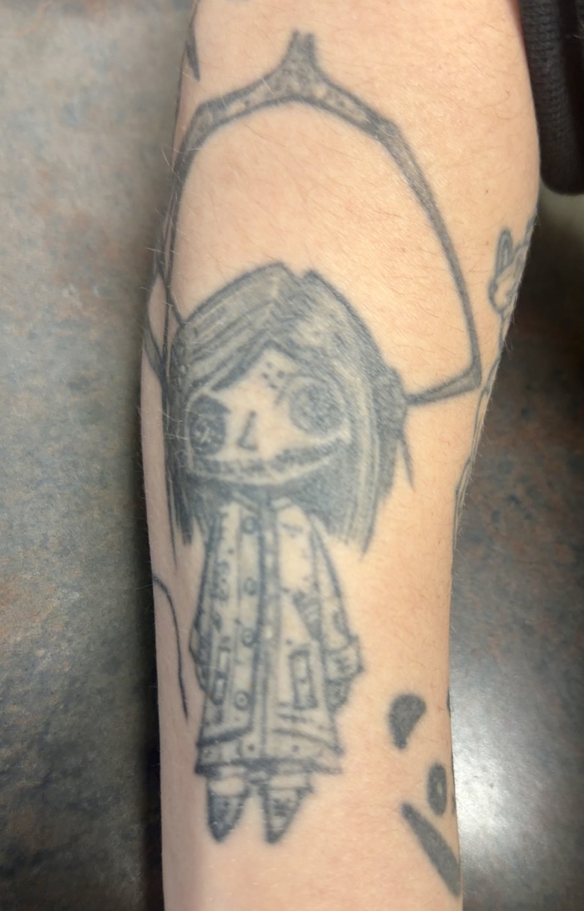
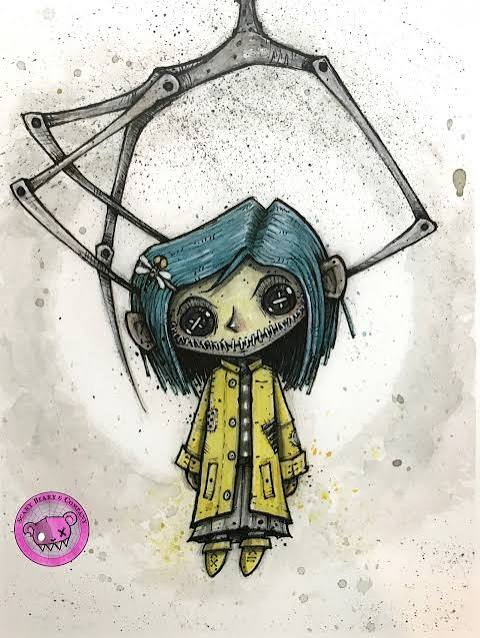

Hello! My name is Nikki Hamrick. I am a veteran and served in the U.S. Navy for five years as a Hospital Corpsman. In my free time, I enjoy crocheting, reading, painting, and fishing. I have two cats, Poseidon and Opal, who keep me company while I crochet and read. I currently work the night shift at the Youth Crisis Center in Twin Falls. I spend most of my shift monitoring the facility and making sure everything stays safe and quiet throughout the night. Since the night shift is usually pretty quiet, I'm able to use that time to work on my schoolwork or listen to an audiobook while I crochet!
One of my all-time favorite movies is Coraline. I love the dark and creepy style of the movie, but i especially love reading the different theories the internet comes up with regarding Coraline, the Other World, and the characters. My love for the movie got to me enough, that I got tattoo of the Coraline doll!
I decided to use blues and purples for my website to give it that Other Worldly Coraline feel.

